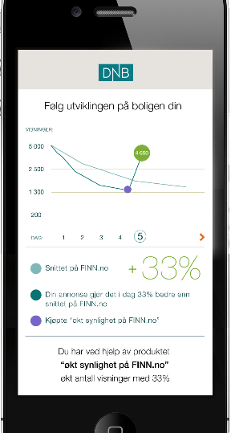
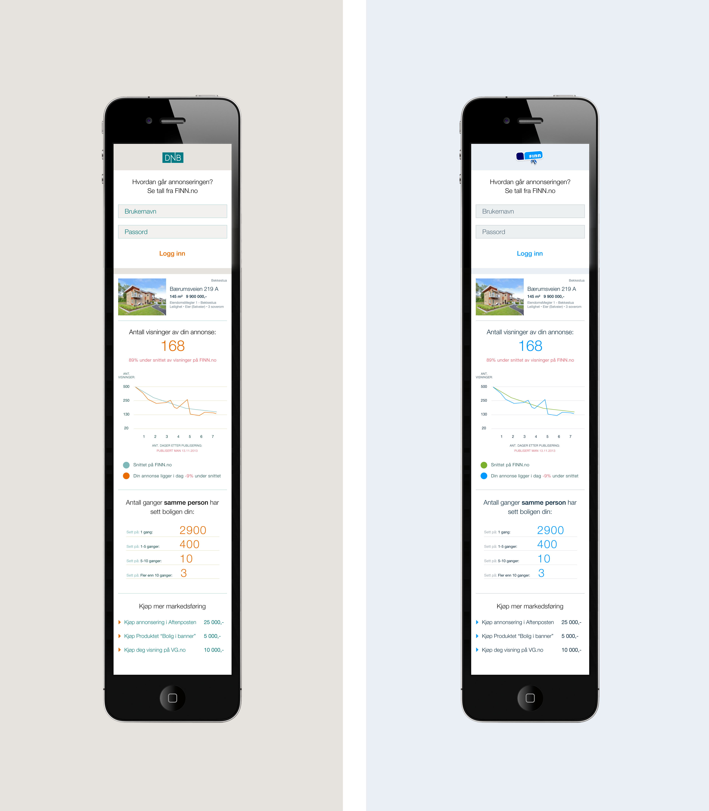

Effekt
Avispenger og statistikk
Av og med lotte.johansen@finn.no / fihagjer@finn.no
Bakgrunn
Avispenger
Realestate-upsale
FINN-effekt
Arbeidsskisse


Redigerte skisser

Graph
Google line
Google bar
Google time line
Flotr2 line
D3
gRaphaël
Statistikk
- Antall sidevisninger pr dag siden publish date
- Gjennomsnittlig sidevisninger pr dag siden publish date for " lignende annonser "
- Gjentatte besøk fra samme bruker
- Referring page
Oppsalgsprodukter
PO's hjørne
Annonse i Aftenposten
Banner på VG
Banner på FINN
(Kampanje på Facebook)
Løsning
Single page - bare en sidevisning
Laster html og fyller .page-elementet med innhold fra json/mustache
Må være autentisert for å få vist innhold
Faller tilbake til login-dialog hvis json.status === 401
Én controller-klasse effekt/myad.json
Externals
external/
├── es5-shim.js
├── g.line.js
├── g.raphael-min.js
├── mustache.js
├── promise-3.2.0.js
├── raphael.js
└── reqwest.js
Internals
finn/
├── effekt
│ ├── graph.js
│ ├── main.js
│ ├── page.js
│ ├── preparer.js
│ └── upsale.js
└── lib
├── auth.js
├── authstate.js
├── env.js
├── form.js
├── log.js
├── palette.js
├── serverfacade.js
├── style.js
└── utility.js
JSON
json: {
result: {
adData:{adId:44817763,…}
adReferringDomainStatistics:{statisticsResult:[],error:false,message:""}
adRepeatedVisitorStatistics:{statisticsResult:[],error:false,message:""
adViewsStatistics:{statisticsResult:{},error:false,message:""}
tart: "finn"
upsaleProducts: []
}
}
Tart the bride
{{#error}} {{>messagetemplate}} {{/error}}
Flow
getAdStatView().then(onAdStatView, onFail).then(null,onFail);
...
function onFail(err) {
FINN.body.innerHTML = '';
if (!!err.status && err.status.toString() === "401"){
FINN.auth.login(init);
}else {server.handleError(err);}
}
...
function onAdStatView (adview) {
return getMustache(populateView(adview))
.then(whenRendered ,onFail) //insert & tart
.then(drawAndBind); //draw & bind events
}
Neste stopp Oslo Sentralbanestasjon
Bonzo-testing på huset
Bonzo-testing på Oslo sentralbansestasjon
Resultater
Problemer under veis
Ingen kjente problemer
Transition Styles
You can select from different transitions, like:
Cube -
Page -
Concave -
Zoom -
Linear -
Fade -
None -
Default
Themes
Reveal.js comes with a few themes built in:
Default -
Sky -
Beige -
Simple -
Serif -
Night
Moon -
Simple -
Solarized
* Theme demos are loaded after the presentation which leads to flicker. In production you should load your theme in the <head> using a <link>.
Global State
Set data-state="something" on a slide and "something"
will be added as a class to the document element when the slide is open. This lets you
apply broader style changes, like switching the background.
Custom Events
Additionally custom events can be triggered on a per slide basis by binding to the data-state name.
Reveal.addEventListener( 'customevent', function() {
console.log( '"customevent" has fired' );
} );
Slide Backgrounds
Set data-background="#007777" on a slide to change the full page background to the given color. All CSS color formats are supported.
Image Backgrounds
<section data-background="image.png">Repeated Image Backgrounds
<section data-background="image.png" data-background-repeat="repeat" data-background-size="100px">Background Transitions
Pass reveal.js the backgroundTransition: 'slide' config argument to make backgrounds slide rather than fade.
Background Transition Override
You can override background transitions per slide by using data-background-transition="slide".
Clever Quotes
These guys come in two forms, inline:
“The nice thing about standards is that there are so many to choose from”
and block:
“For years there has been a theory that millions of monkeys typing at random on millions of typewriters would reproduce the entire works of Shakespeare. The Internet has proven this theory to be untrue.”
Pretty Code
function linkify( selector ) {
if( supports3DTransforms ) {
var nodes = document.querySelectorAll( selector );
for( var i = 0, len = nodes.length; i < len; i++ ) {
var node = nodes[i];
if( !node.className ) {
node.className += ' roll';
}
}
}
}
Courtesy of highlight.js.
Intergalactic Interconnections
You can link between slides internally, like this.
Fragmented Views
Hit the next arrow...
... to step through ...
any type- of view
- fragments
Fragment Styles
There's a few styles of fragments, like:
grow
shrink
roll-in
fade-out
highlight-red
highlight-green
highlight-blue
current-visible
highlight-current-blue
Spectacular image!

Export to PDF
Presentations can be exported to PDF, below is an example that's been uploaded to SlideShare.
Take a Moment
Press b or period on your keyboard to enter the 'paused' mode. This mode is helpful when you want to take distracting slides off the screen during a presentation.